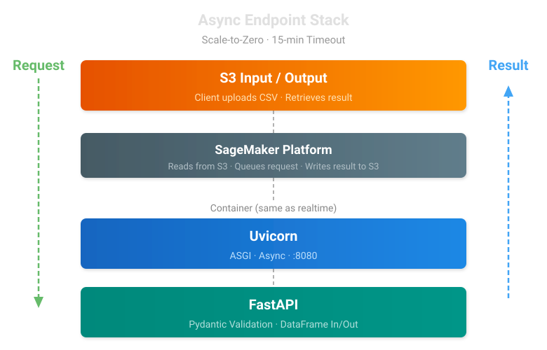

AsyncEndpointCore
API Pass-Through
Endpoint automatically routes to AsyncEndpointCore when the underlying SageMaker endpoint was deployed as async (workbench_meta["async_endpoint"]). Callers use Endpoint — the async S3 round-trip is handled internally.
AsyncEndpointCore is the implementation that backs async (long-running) inference for endpoints whose model takes longer than the 60-second sync invocation cap. It supports invocations up to 60 minutes and scales to zero when idle, so you only pay for compute during active batch runs.

AsyncEndpointCore: Workbench Async Endpoint support.
Extends EndpointCore to support SageMaker async inference endpoints. Async endpoints accept the same model artifacts and container images as realtime endpoints, but invocations are non-blocking: input is uploaded to S3, the response is written to an S3 output location, and the caller polls for completion.
This is useful for workloads where per-invocation latency exceeds the realtime 60-second server-side timeout (e.g., Boltzmann 3D descriptor generation that can take minutes per molecule).
The API surface is identical to EndpointCore — inference() and
fast_inference() return DataFrames synchronously, hiding the async
S3 round-trip from the caller.
Implementation: the protocol-level invocation lives in
workbench.endpoints.async_inference; this class adds
Workbench-specific concerns (workbench_meta knobs for batch sizing
and concurrency, capture/monitoring, S3 path resolution).
AsyncEndpointCore
Bases: EndpointCore
EndpointCore subclass for SageMaker async inference endpoints.
Overrides the invocation path (_predict / fast_inference) to use the async S3 upload → invoke_async → poll S3 → download pattern. All metadata, metrics, and capture logic is inherited unchanged.
Source code in src/workbench/core/artifacts/async_endpoint_core.py
65 66 67 68 69 70 71 72 73 74 75 76 77 78 79 80 81 82 83 84 85 86 87 88 89 90 91 92 93 94 95 96 97 98 99 100 101 102 103 104 105 106 107 108 109 110 111 112 113 114 115 116 117 118 119 120 121 122 123 124 125 126 127 128 129 130 131 132 133 134 135 136 137 138 139 140 141 142 143 144 145 146 147 148 149 150 151 152 153 154 155 156 157 158 159 160 161 162 163 164 165 166 167 168 169 170 171 172 173 174 175 176 177 178 179 180 181 182 183 184 185 186 187 188 189 190 191 192 193 194 195 196 197 198 199 200 201 202 203 204 205 206 207 208 209 210 211 | |
fast_inference(eval_df, threads=4)
Async version of fast_inference — ignores threads, uses S3 polling.
Source code in src/workbench/core/artifacts/async_endpoint_core.py
purge_async_queue()
Cancel all queued async invocations for this endpoint.
Thin wrapper over :func:workbench.endpoints.async_inference.purge_async_queue.
See that function for behavior, caveats, and return semantics.
Source code in src/workbench/core/artifacts/async_endpoint_core.py
test_inference(num_rows=10)
Smoke-test this async endpoint on a small sample.
Async workloads can run at seconds-to-minutes per row, so the sample is capped low by default — enough to verify the endpoint responds end-to-end.
Parameters:
| Name | Type | Description | Default |
|---|---|---|---|
num_rows
|
int
|
Max number of rows to sample (default 10). |
10
|
Returns:
| Type | Description |
|---|---|
DataFrame
|
pd.DataFrame: The inference results (empty if no model/data). |
Source code in src/workbench/core/artifacts/async_endpoint_core.py
Examples
The examples below use the Endpoint API class — the same interface you use for sync endpoints. Routing to AsyncEndpointCore happens automatically based on the endpoint's deploy-time metadata.
Run Inference on an Async Endpoint
from workbench.api import Endpoint
# Endpoint detects async deployment and routes through AsyncEndpointCore internally
endpoint = Endpoint("smiles-to-3d-full-v1")
results_df = endpoint.inference(df)
Use with InferenceCache for Batch Processing
from workbench.api import Endpoint
from workbench.api.inference_cache import InferenceCache
endpoint = Endpoint("smiles-to-3d-full-v1")
cached_endpoint = InferenceCache(endpoint, cache_key_column="smiles")
# Only uncached rows are sent to the endpoint
results_df = cached_endpoint.inference(big_df)
Deploy an Async Endpoint from a Model
from workbench.api import Model
model = Model("smiles-to-3d-full-v1")
end = model.to_endpoint(
async_endpoint=True,
tags=["smiles", "3d descriptors", "full"],
)
# Override the default ml.c7i.xlarge with instance="ml.c7i.2xlarge" if your
# model needs more CPU/memory per worker.
Async endpoints deploy with scale-to-zero auto-scaling — the instance spins down after ~10 minutes of idle time and cold-starts on the next request. This makes them cost-effective for overnight batch workloads.
When to Use Async vs Sync
| Sync Endpoint | Async Endpoint | |
|---|---|---|
| Invocation timeout | 60 seconds | 60 minutes |
| Scaling | Fixed instance count | Scale-to-zero when idle |
| Best for | Realtime inference, low latency | Long-running batch processing |
| Cost when idle | Pays for running instance | Zero (scales down) |
| Caller code | Endpoint(name).inference(df) |
Endpoint(name).inference(df) (identical) |
The sync/async choice is made at deploy time via model.to_endpoint(async_endpoint=True). Caller code is identical in both cases.